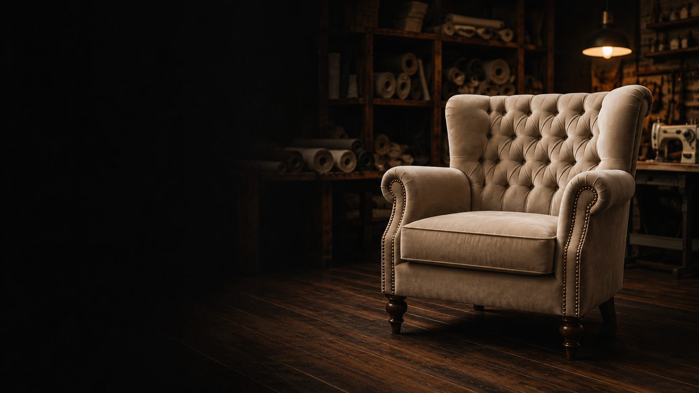
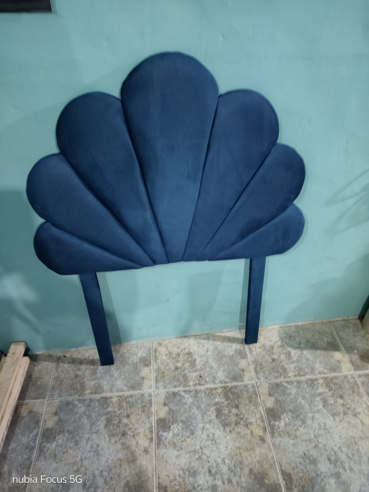
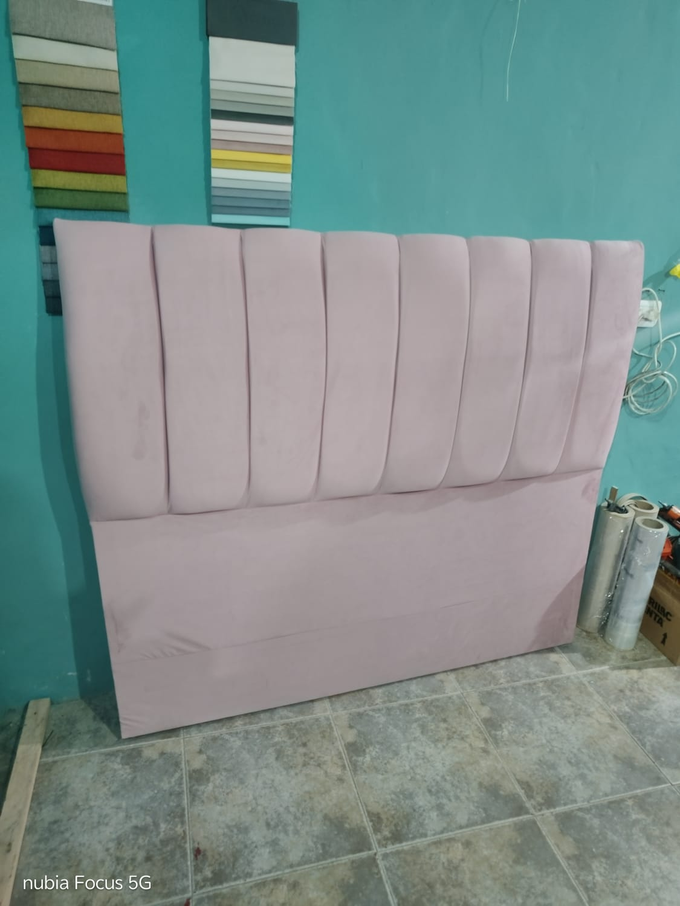
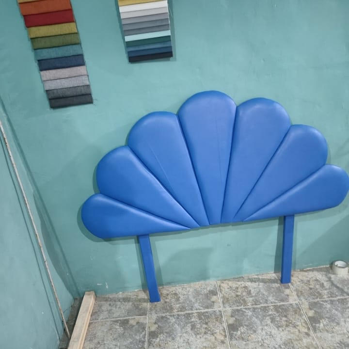
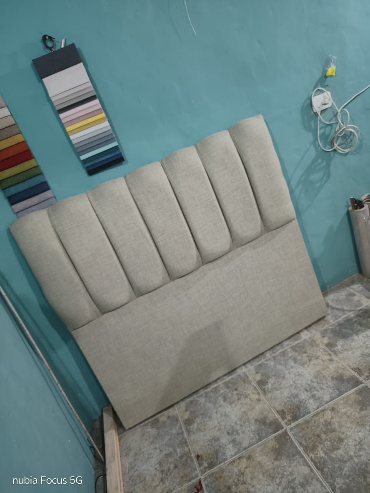
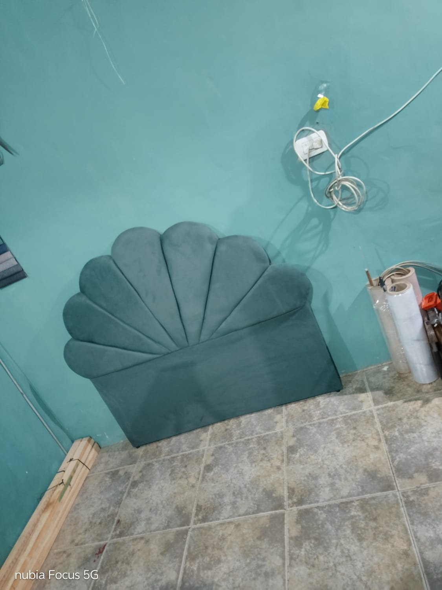
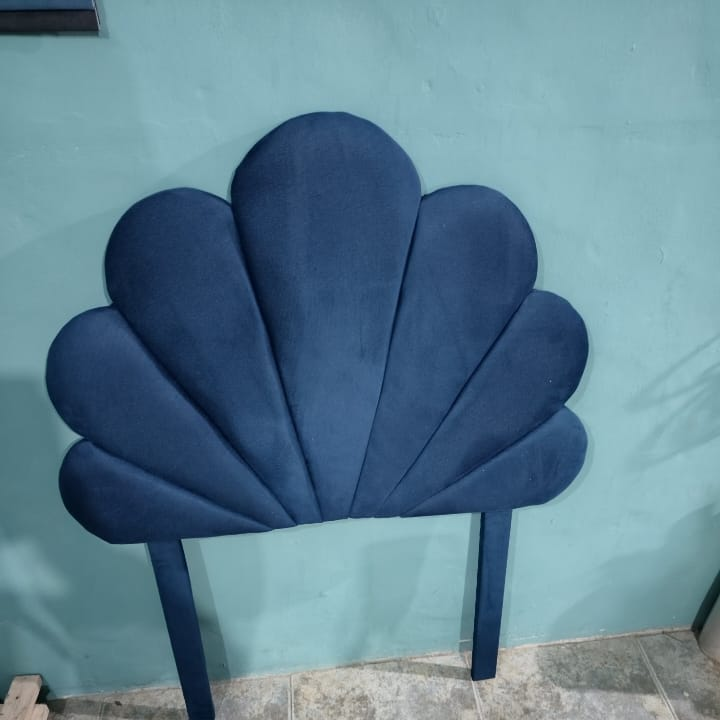
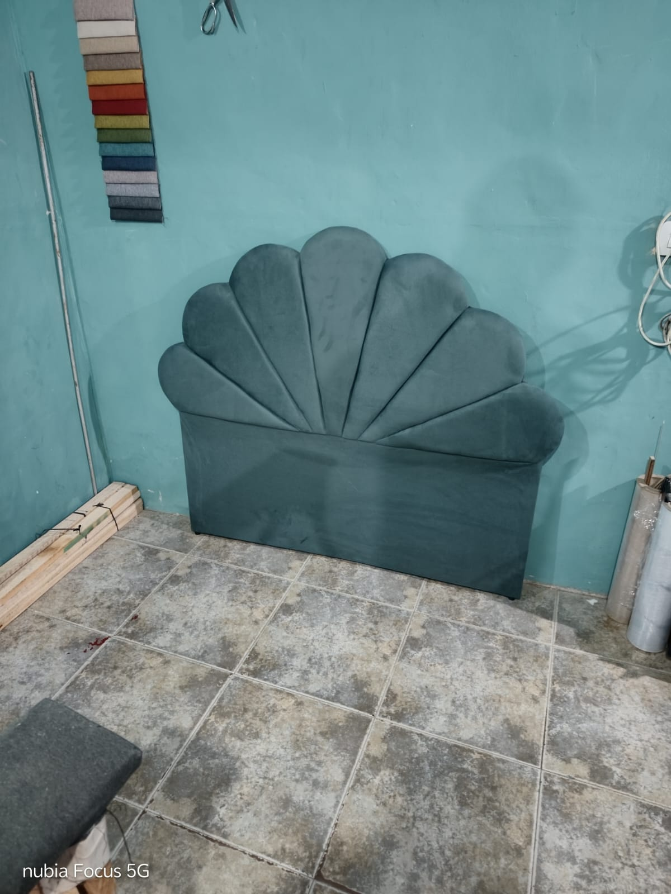

Sillones
Renovamos sillones individuales y juegos completos, reemplazando telas y devolviéndoles presencia y comodidad.

Tapizados y restauraciones realizados a medida, con atención personalizada y terminaciones que hacen la diferencia.
Mandanos una foto de tu mueble y te asesoramos sin compromiso.
Trabajamos cada pieza de manera personalizada, adaptándonos al estilo y necesidades de cada cliente.
Renovamos sillones individuales y juegos completos, reemplazando telas y devolviéndoles presencia y comodidad.
Tapizados y respaldos personalizados para transformar completamente el dormitorio.
Renovación y tapizado de pufs en diferentes telas, colores y terminaciones.
¿Tenés otro mueble que querés recuperar? Mandanos una foto y consultanos.
Elegí una tela y mirá cómo queda. Es solo una guía visual: trabajamos con muchísimas telas y colores más. Cuando tengas tu favorito, consultanos.
Los colores en pantalla son orientativos y pueden variar según la tela real.
Algunos muebles que pasaron por nuestro taller y volvieron completamente renovados.







Mandanos una foto por WhatsApp y contanos qué querés hacer. Te asesoramos sobre las opciones disponibles.
Enviar foto y consultarPodés enviarnos por WhatsApp una o varias fotos del mueble junto con una breve descripción de lo que querés realizar. Con esa información podemos orientarte y coordinar los siguientes pasos.
Sí. El trabajo se realiza de manera personalizada y podemos asesorarte sobre diferentes opciones de telas, colores y terminaciones.
No. También realizamos respaldos, pufs y diferentes trabajos de tapicería. Si tenés otro tipo de mueble, envianos una foto y consultanos.
Dependiendo del estado y del tipo de mueble podemos evaluar diferentes alternativas para renovarlo. Lo ideal es enviarnos fotografías por WhatsApp.
El tiempo depende del tipo de mueble, el trabajo necesario y los materiales elegidos. Una vez evaluado el trabajo podemos indicarte un plazo estimado.
La manera más rápida es enviándonos un mensaje directamente por WhatsApp.
Contanos qué querés renovar y recibí asesoramiento personalizado.
Consultar por WhatsApp WhatsApp: 11 7824-1899